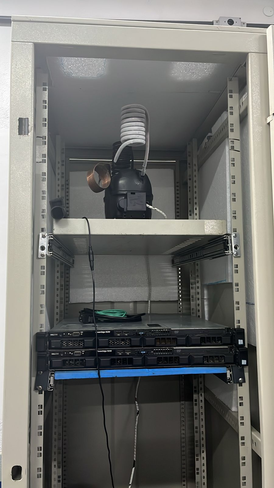
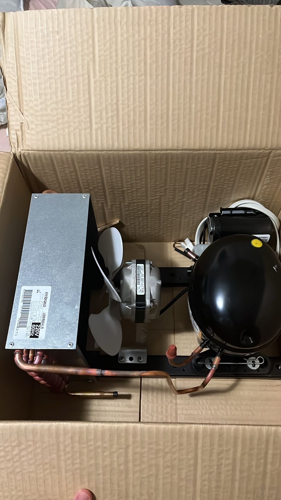
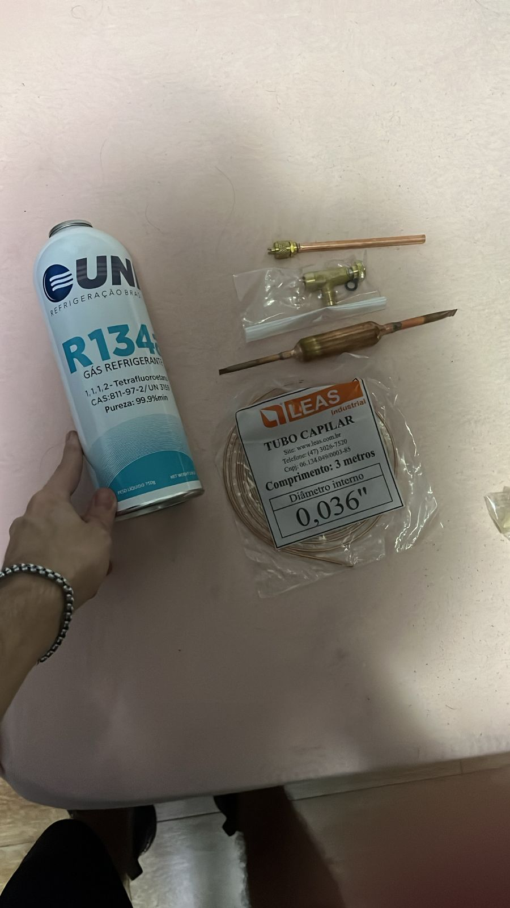

Este projeto tem como objetivo desenvolver um rack refrigerado utilizando uma
unidade condensadora adaptada, com o intuito de reduzir custos e manter a
temperatura ideal dos servidores. O sistema foi projetado para garantir uma refrigeração eficiente
em ambientes de TI, utilizando componentes de geladeira reaproveitados para criar uma solução
sustentável e de baixo custo.
Imagens do Projeto



Objetivos
Apresentar uma alternativa econômica e funcional de refrigeração para racks de servidores.
Demonstrar a viabilidade de reaproveitamento de peças de geladeira em projetos tecnológicos.
Manter o desempenho dos equipamentos de rede com controle térmico eficiente.